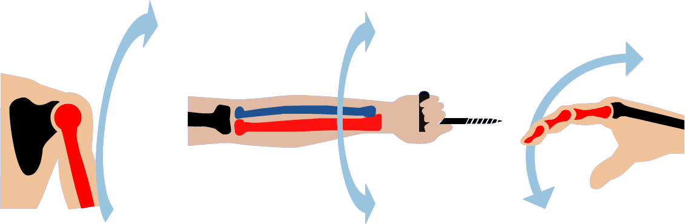

| HOMEPAGE | SISTEMI ED APPARATI | FASI DELLA VITA | ||
| HOMEPAGE | SISTEMI ED APPARATI | FASI DELLA VITA | ||
Lo scheletro umano costituisce la struttura portante del corpo ed è formato dall'insieme delle ossa, variamente unite tra di loro dalle articolazioni.
Lo scheletro, oltre alle funzioni di sostegno:
Le ossa
Lo scheletro dell'adulto è formato da 206/214 ossa circa (si può avere una vertebra in più e molte ossa del piede sono in numero variabile: durante lo sviluppo le ossa cambiano di numero, evolvendosi e diminuendo dopo i 45 anni).
Le ossa vengono suddivise sostanzialmente in base alla loro forma:
Ossa corte o brevi: la lunghezza e il diametro sono all'incirca della stessa misura. Sono costituite all'interno da tessuto osseo spugnoso, ricoperto da una lamina di tessuto osseo compatto. Ossa corte sono quelle del polso e del tarso, le vertebre.
Ossa piatte: hanno uno spessore ridotto e una superficie particolarmente estesa. Sono anch'esse costituite da tessuto osso spugnoso all'interno e rivestite da tessuto osseo compatto, che forma i cosiddetti tavolati. Tipiche ossa piatte sono quelle del cranio, del bacino e dello sterno.
Il tessuto osseo spugnoso, presente all'interno delle ossa piatte e delle ossa brevi e nelle epifisi delle ossa lunghe, contiene il midollo osseo rosso, dove avviene la produzione dei globuli rossi e bianchi del sangue (funzione emopoietica). Nella ossa lunghe, la parte centrale, definita "diafisi" contiene il canale midollare, generalmente occupato dal midollo osseo giallo, che perde la capacità di produrre le cellule del sangue e assume soprattutto una funzione di accumulo di sostanze di riserva (grasso). Il midollo giallo, tuttavia, in caso di necessità si può ritrasformare in midollo rosso (es. a seguito di emorragie) e tornare a produrre le cellule del sangue.
Patologie comuni dell'apparato scheletrico
Fratture
La frattura consiste nella rottura di un osso determinata per lo più da un trauma. Si distinguono vari tipi di fratture, in relazione alle modalità di rottura dell'osso. In primo luogo una frattura può essere:
La frattura completa può essere:
Paramorfismi della colonna vertebrale
La colonna vertebrale, vista di lato, presenta quattro curve caratteristiche. Partendo dall'alto distinguiamo:
1) lordosi cervicale, 2) cifosi dorsale, 3) lordosi lombare, 4) cifosi sacrale.
La lordosi presenta una concavità posteriore, mentre la cifosi è una curvatura a concavità anteriore. Sono proprio queste quattro curve alternate che permettono l'elasticità e la solidità della colonna vertebrale.
I paramorfismi sono alterazioni della morfologia corporea normale spesso dovuti a posture errate che alterano la struttura e l'aspetto della colonna vertebrale, deformandola.
L'ipercifosi consiste in un aumento della curvatura della cifosi dorsale (dorso curvo o gobba). Il soggetto è curvo in avanti e il torace è incassato, mentre la muscolatura addominale è rilassata. Spesso è accompagnata da un aumento della lordosi lombare.
L'iperlordosi consiste in una accentuazione della normale curvatura della lordosi lombare (pancia in fuori). E' una patologia molto più frequente nel sesso femminile a causa della diversa conformazione ossea e delle abitudini culturali (ad esempio tacchi alti). La normale lordosi lombare si accentua durante gli ultimi mesi di gravidanza.
La scoliosi si presenta come una deviazione laterale della colonna vertebrale. Con la scoliosi si formano una o più curve che alterano l'aspetto e la funzione della colonna e del tronco. Questa condizione, se non è accompagnata dalla rotazione dei corpi vertebrali, tende alla guarigione spontanea durante l'accrescimento e non necessita di trattamenti particolari salvo terapie fisiche adeguate e sport.
Osteoporosi
L'osteoporosi è definita "una malattia sistemica dello scheletro, caratterizzata dalla diminuzione della massa minerale e dal deterioramento del tessuto osseo che porta all'aumento della fragilità dell'osso e a un maggior rischio di fratture".
Le cause sono ancora in parte sconosciute, anche se alcuni fattori aumentano il rischio della comparsa di questa malattia.